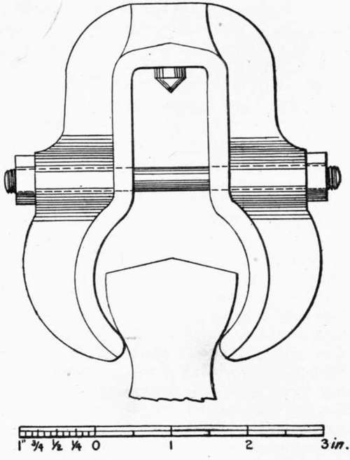

Art. 25. Breaking The Briquets
Description
This section is from the book "Cement And Concrete", by Louis Carlton Sabin. Also available from Amazon: Cement and Concrete.
Art. 25. Breaking The Briquets
198. The Testing Machine
The function of the testing machine is simply to furnish a means of applying the tensile stress, and of measuring the amount of force required to break the briquet. Aside from the clips, which hold the briquet, any contrivance which may be conveniently operated, and which will accurately measure the force applied, may be used for this purpose.
There are several forms of testing machines on the market, all designed on the lever principle, though differing slightly in the method of application. The force is applied either by allowing water or shot to run into or out of a vessel suspended at the end of the longer arm of a lever, or a weight is made to run along the lever arm, which is graduated so that the force applied may be read from the beam.
199. In machines of the first class the delivery of shot is cut off automatically the instant the briquet breaks. The advantage of this style is that the flow of shot may be so adjusted as to approximately regulate the rate of applying the stress; but little skill is required to operate it, and, since in its best form two levers are used, the shorter arm of one acting on the longer arm of the other, the machine occupies but little space. This machine does not permit rapid operation, since the shot must be weighed each time a briquet is broken. One of the main disadvantages of this form has been that in the case of strong briquets, a certain initial strain had to be applied in order that the stretch of the briquet and the slipping of the clips should not allow the shot to be cut off before the briquet broke. This objection, however, has recently been met by the makers, who have provided means of taking up this slip by a hand crank.
200. Another objection urged against the short-lever shot machines is the fact that as the stream of shot flowing into the scale pan is cut off by the breaking of the briquet, a certain amount of shot on its way to the pan falls into the pan after the briquet breaks, and is weighed, although not acting on the briquet at the time of the break. A form of shot machine is now on the market, however, in which this objection has been overcome. The load is applied by means of a weight hanging from one end of a lever. This weight is at first counterbalanced by a pail of shot at the other end of the lever, but as the shot is allowed to run out of the vessel, the unbalanced portion of the weight acts, through suitable levers, upon the briquet. The flow of shot is shut off automatically by the breaking of the briquet, and the shot that has escaped is weighed on a special scale to determine the load acting on the briquet.
201. In the other form of machine the weight is made to move along the arm by means of a cord and hand-wheel. This style may be operated much more rapidly, but some skill is required to use it properly, and as now made it occupies too much space. These machines are preferable for laboratories, while the shot machines may well be used in cement factories and small works where a foreman does the testing.
202. It would seem that a machine could easily be made which would combine the desirable features of both of these forms, by placing a heavy weight provided with rollers upon the upper lever arm of the shot machine, and using it in the same way that the hand power machine is now used. This would involve placing a hand wheel and cord upon the machine to operate the moving weight, the shot attachment being removed. Such a machine would combine the compactness of the shot machine, with the accuracy and speed of the single lever machine; the graduations on the beam could represent five pounds each, instead of two pounds, the value of the graduations now on the single lever machines.
203. Forms Of Clip
Since cement has been tested by tensile strain, it has ever been a problem to obtain a clip which would give a perfectly true axial pull on the briquet. Various forms of clips have been used from time to time, but none of them has proved satisfactory in all respects. To trace the history of the development of the clip is not warranted by its interest, but it may be said that in some of the early forms the head of the briquet was held between two plates and clamped tight enough to develop sufficient friction to transmit the stress. The later forms of briquets are made with a shoulder or with wedge-shaped ends to allow the clip to grasp them. Mr. John Grant, Mr. Alfred Noble, General Gilmore, Mr. J. Sondericker and Mr. D. J. Whittemore have each designed or adapted different forms, and more recently Mr. S. Bent Russell and Mr. W. R. Cock have each devised a clip which will be mentioned below.
Fig. 6. RIEHLE "ENGINEERS' STANDARD" CLIP.
204. Form In Most General Use
The clip in most general use in the United States is of the general style shown in Fig. 6. It differs only in detail from the form recommended by the Amer. Soc. C. E. Committee of 1885, which has been called the "Engineers' Standard." The general form is pear shaped; the briquet is grasped at the points of reverse curve at the side of the briquet, giving an area between opposite gripping points of about one and a quarter square inches. The gripping points are rather too sharp, when new, as they have a tendency to crush the briquet locally. The width of the bearing increases with the amount of wear the clip sustains. The clip is provided with a conical pivot, which rests in a cone-shaped cavity attached to the machine, so that the two parts of the clip are free to swing. In a form which was previously used to a considerable extent, each bearing surface was designed to be about an inch square, the jaw being made to conform to the outline of the briquet. This form, however, did not give satisfactory results; a particle of sand between the briquet and the bearing surface of the clip would give an eccentric pull, and strong briquets would sometimes break in the head of the briquet transverse to the axis, in several curved layers joining opposite gripping surfaces.
205. Clip-Breaks
When a briquet is inserted in the ordinary clip, the gripping points will not, in general, grasp the briquet symmetrically. The gripping points have a tendency to slide on the surface of the briquet in order to assume a symmetrical position; there is friction to resist this sliding, and when this resistance overcomes the tendency to motion, the two clips and the briquet become a rigid system, and bending strains may be introduced. Again, if the briquet is not too badly adjusted in the clips, it is apt to break in a line joining two opposite gripping points, instead of at the smallest section; this is called a " clip-break." The tendency to form clip-breaks is greater if the gripping points are very narrow or have sharp edges; neat cement briquets exhibit this tendency much more than briquets from sand mortars, and some samples of cement are much more likely to give clip-breaks than others.
206. Cause Of Clip-Breaks
When a briquet breaks in this manner, the broken section is usually about normal to the side of the briquet at the point where the jaw was in contact. This indicates that a clip-break is caused by compression at that place: there is evidently compression along the plane joining the two opposite gripping points, and tension at right angles to that plane, and the briquet fails here as a result of the two stresses. If the briquet is not properly adjusted in the clips, but is so placed that its longest axis is at one side of the line joining the points of application of the forces (in the " Engineers' Standard" clip, the line joining the pivot points), then the bending strain that is introduced is greatest at the central section of the briquet; this may cause the briquet to break at the smallest section, when if it were properly adjusted in the clips it would develop a clip-break. The bearing surfaces of the clip should not be too small, as this increases the intensity of pressure, but on the other hand there appears to be no practical advantage in making this area more than 3/16 to 1/4 inch wide (the length being limited by the thickness of the briquet, one inch).
207. Prevention Of Clip-Breaks
The method most frequently adopted to prevent clip-breaks is to cushion the gripping points with some compressible material, such as thin rubber or blotting-paper. This device prevents clip-breaks, but the result of about three hundred tests made under the author's direction showed clearly that it also lowered the apparent strength very materially.1 Briquets broken with the bare clips showed a mean strength of 606 pounds per square inch, while the cushioned clips gave an apparent strength of but 521 pounds, or 86 per cent, of the strength without the cushion; of the briquets broken with the bare clips, 33 per cent, were clip-breaks; with the cushioned clips no clip-breaks occurred. The rubber was applied by slipping two rubber bands over each end of the briquet, giving cushions about 1/16 inch thick.
Continue to:
- prev: 197. Other Methods Of Storing Briquets
- Table of Contents
- next: 208. Strength Of Briquets That Develop Clip-Breaks